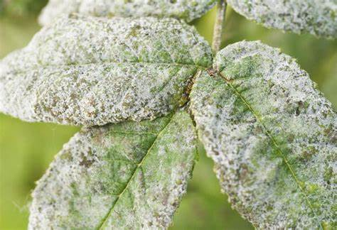
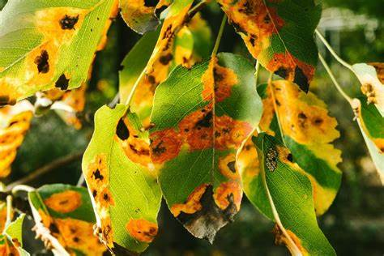

1. Powdery Mildew
Powdery mildew is a fungal disease that affects many types of plants, leaving white powdery spots on the leaves. It thrives in warm, dry environments.
Prevention: Use resistant plant varieties, provide proper air circulation, and avoid overhead watering. Remove affected leaves and apply fungicides if necessary.
2. Leaf Spot
Leaf spot diseases are caused by a variety of fungi and bacteria, leading to small, dark lesions on leaves. These spots can spread and cause significant damage.
Prevention: Remove infected leaves, avoid wetting the leaves during watering, and apply appropriate fungicides or bactericides.
3. Root Rot

Root rot is a disease caused by various fungi and occurs when the plant roots become waterlogged and oxygen-starved. The roots may turn brown or black.
Prevention: Ensure well-draining soil, avoid overwatering, and use disease-resistant plant varieties. Remove and discard affected plants.
4. Aphid Infestation

Aphids are small pests that suck sap from plants, weakening them and spreading diseases. They often cause curling leaves and yellowing foliage.
Prevention: Regularly check plants for aphids, spray with water to remove them, and use insecticidal soap or natural predators like ladybugs.